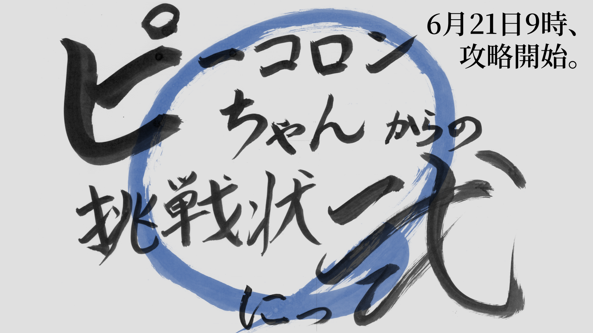
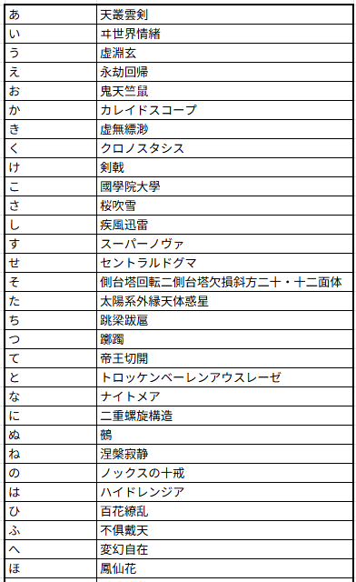
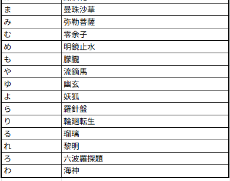

言葉遊びコミュニティでの大規模イベント進行・管理

基本情報
- 制作時期
- 大学3年6月（イベント『ピーコロンちゃんからの挑戦状 弐』）
- 役割
- コーナー司会進行、議論のファシリテーション
- 使用ツール
- Discord(議論)、Excel(結果まとめ)
- 規模
- 参加者 約50名 / 議論時間 5時間半
- 成果
- 全46文字の「字面がかっこいい言葉」選定完遂
コミュニティ内ミームの定着
制作のきっかけ / 活動の背景
私が所属していた言葉遊びコミュニティ『ピーコロン』の2周年イベントにて、ユーザー全員で協力してクリアを目指す大規模企画が行われました。
「46個のお題をクリアして文字を解禁し、その文字だけでしりとりを1万語繋げる」というルールの中、私は最難関のお題の一つである「『あ』〜『わ』で始まる、字面がかっこいい言葉を決める」（通称：朝から晩までそれら正解2）の進行役を担当することになりました。
こだわった点・工夫した点
- 自然発生的な役割分担と、リーダーシップ
- 「内輪ノリ」を許容し、コミュニティの文化を作る
10時の開始当初は数名での議論でしたが、正午を過ぎて他のお題が全てクリアされると、手の空いた参加者数十名が一斉にこのコーナーへ流入してきました。
ログの加速によって参加者の熱狂を感じた私は、「候補出し」「決選投票」「結果の集計」を一手に引き受け、他の参加者が全力で議論できるよう整理に努めました。
議論の中で「『山』という漢字は正面から見たゾウに見えるからダサい」という突飛な意見が出ました。同調も疑義も多数ありましたが、それを真っ向から否定することはせず、泳がせておく判断をしました。
結果、これは「山＝ゾウ」というコミュニティ内ミームとして定着。イベントをきっかけに新たな内輪ノリができたことで、コミュニティの結束が強まった印象を受けました。
結果
後半になるにつれて議論/投票が白熱し、決選投票を2回行うことになるほど意見が割れ続けた文字もありましたが、無事に15時38分に全文字が確定。
最終的な成果物は以下のシートにまとめられ、イベントクリアの大きな足掛かりとなりました。
▼ 完成した「かっこいい言葉」リスト


振り返り・学び
不特定多数のユーザーが集まる場において、「他者の負担を減らすための行動」と「盛り上がりを阻害しない遊び心」の重要性を学びました。
この経験は、ゲーム運営におけるコミュニティマネジメントや、チーム制作における議事進行にも活かせると確信しています。